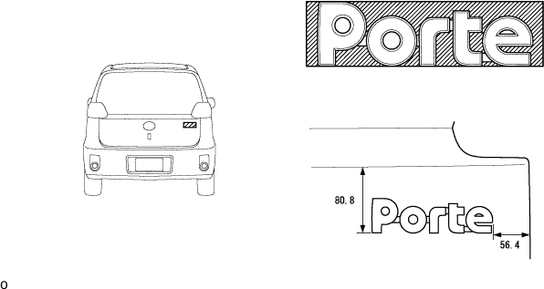

ネームプレート 取り付け
印刷
準備品一覧
1. ラゲージコンパートメントドアネーム プレート NO.2取り付け
赤外線ランプなどでボデーに残った両面テープを暖める。
□ 参 考 □
40-60°Cで1-2分間
ボデーに残った両面テープをウエスなどでこすり除去する。
■ 注 意 ■
両面テープが残った状態でネームプレートを取り付けると接着不良の原因となるため、十分に除去できるまで行なう。
白ガソリンでボデー貼り付け面を清掃後、ネームプレートを図の位置に取り付ける。

■ 注 意 ■
ネームプレート貼り付け作業は、雰囲気温20°C以上で行なう。雰囲気温20°C未満の場合は、ボデーを赤外線ランプなどで20-30°Cに暖めてからネームプレートを貼り付ける。